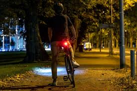
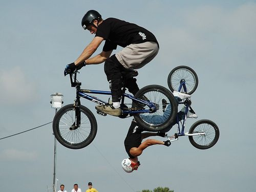

Resistencia de CiudadLos modelos urbanos priorizan la comodidad y la seguridad frente al tráfico diario. Integran reflejantes de alta visibilidad, salpicaderas de aluminio liviano y masas con cambios internos que requieren cero mantenimiento mecánico constante. |
 |
|
 |
Geometría BMXLas bicicletas de acrobacias poseen cuadros de cromoly de tamaño reducido muy rígidos. No llevan velocidades y sus rines reforzados de doble pared soportan grandes impactos tras caídas de barandales, escaleras o rampas de tierra. |